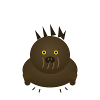

← Back to Gallery
← Zoo Map
Ghost Crab
AETHER DRIFT
Ghost Crab is a creature in the Aether Drift biome of Oma Zoo.
Connected to 2 other creatures
Allies
Mist Wraith
AETHER DRIFT
Cross-Biome Connections

Thorn Boar
?